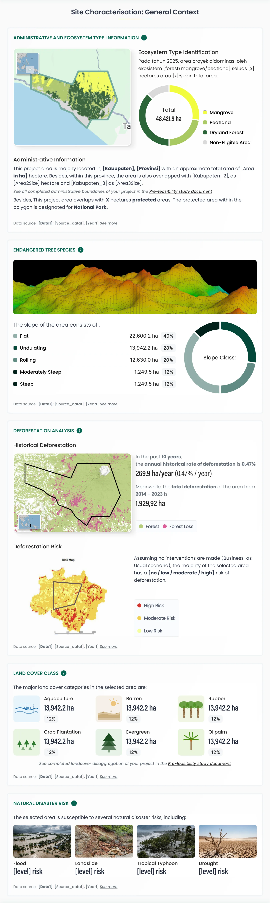
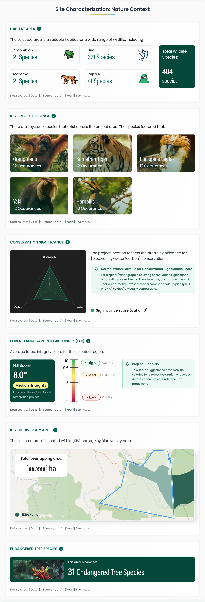
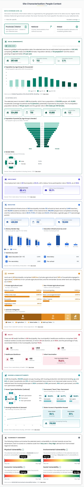
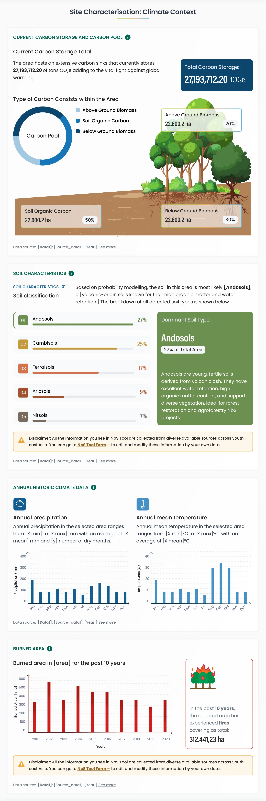

Analyzing the area
Choose your analysis area
Pick a method to define the polygon area or geographic boundary for Nature, People & Climate analysis.
New: search directly by province or district.
System will show the administrative boundaries polygon to help you digitize your polygon

Draw the polygon
Select any location to start draw polygon. Double click to finish it

Upload SHP File
Drop your SHP file here to generate the Site Characterisation data. Format file: .zip (.shp, .shx, .dbf, .prj), .kml, .kmz
Analyze the selected polygon?

The area is too big.
You can only analyse <200.000 ha. Sign in→ for having up to 500.000 ha analysis.




Threat Profile
Pressures detected across the AOI from deforestation-risk modelling and climate-disaster layers.
Deforestation & forest loss
HIGHSustained clearing along the eastern margin, driven by aquaculture conversion. UDEF-A risk model flags this AOI above the regional median.
Fire risk & hotspots
MEDIUMSeasonal hotspots concentrated in drained, degraded margins. Burned-area extent remains contained but trending with dry-season length.
Flood & disaster risk
MEDIUMLow-lying terrain with elevated tidal-flood and sea-level-rise exposure. Landslide risk negligible given flat topography.
Encroachment & other pressures
LOWLimited settlement encroachment within the boundary; pressure mainly from adjacent pond expansion and informal harvesting.
Select intervention pathways
Based on your site characterisation and threat profile, the following NbS pathways are eligible for this mangrove AOI.
- Patrol routes & community ranger training
- Permanent boundary signage (12 km)
- SMS-based alert system for encroachment
- Fire protection & firebreak maintenance
- Grazing management agreements
- Invasive species removal
- Erosion control structures
- Direct planting of nursery stock
- Enrichment planting in degraded gaps
- Hydrology & tidal channel rehabilitation
- ANR site preparation
Methodology. Carbon estimates use IPCC Tier 1 default emission factors for the project's primary ecosystem type. Annual sequestration rates assume linear accrual over the 30-year project duration. Pathway-level allocations are based on the activities and area shares defined in Step 4 (Pathway Selection).
Triple benefit scoring. Pillar scores (HIGH / MEDIUM / LOW) are qualitative indicators derived from the ASEAN NbS/EbA toolkit's Triple Wins framework. Each sub-component is scored on the alignment between your selected pathways, the threat profile, and reference ecosystem characteristics. Scores are not certified outputs and should not be used as standalone verification.
Beneficiary estimates. Household counts are modeled from population-density data overlaid on the project boundary and 5 km buffer. Direct versus indirect classification follows the SCeNe Coalition's Social Impact Framework v2.
Attribution. Pillar framework adapted from the ASEAN NbS/EbA toolkit (2023). Carbon methodology references IPCC 2019 Refinement to the 2006 Guidelines for National Greenhouse Gas Inventories.
Disclaimer. Results shown here are pre-feasibility estimates intended to support project design and screening. They are not a replacement for verification under Verra VCS, CCB, or other certification standards. Final carbon and benefit quantification requires field measurement and audited monitoring as defined in the Monitoring Plan phase.